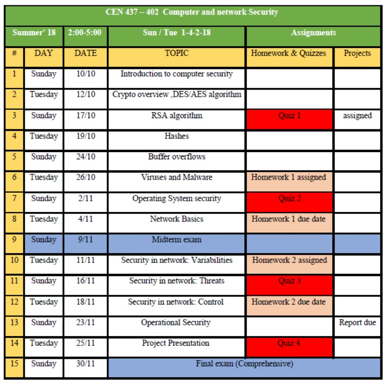

|
Dr. Umar Albalawi
Assistent Professor and Department Chair
Department of Computer Engineering
University of Tabuk
Tabuk, Saudi Arabia
Phone: (+966)-14-427-3022
E-mail: UAlbalwi@ut.edu.sa |
CEN 437 Computer and network Security
Course Description:
Security is becoming one of the core requirements in the design of critical systems. This course will introduce students to computer security and applied cryptography. Students will learn the concepts in computer security including software vulnerability analysis and defense, networking, wireless sensor networks security, and applied cryptography. Students will also learn the fundamental methodology for how to design and analyze security critical systems.
Expected Student Learning Outcomes:
- Students will be exposed to Basic Security Principles
- Introduce applied Cryptography: symmetric primitives (block ciphers, stream ciphers, hash functions), asymmetric primitives (public-key encryption and signature algorithms)
- Network security: SSL/TLS, IPsec, SSH
- Presents Sensor Network Security
- Introduce varies threats models in Sensor Networks
- Be familiar with vulnerability analysis and security schemes in Sensor Networks
Text Book:
Security in Computing, Charles P. Pfleeger and Shari Lawrence Pfleeger, 4th edition, Prentice Hall, ISBN 10: 0132390779
Grading Policy:
- Homework (10 %)
- Quiz (10 %)
- Project (30 %)
- Midterm Exam (20 %)
- Final Exam: Comprehensive (30 %)
Course Content:
